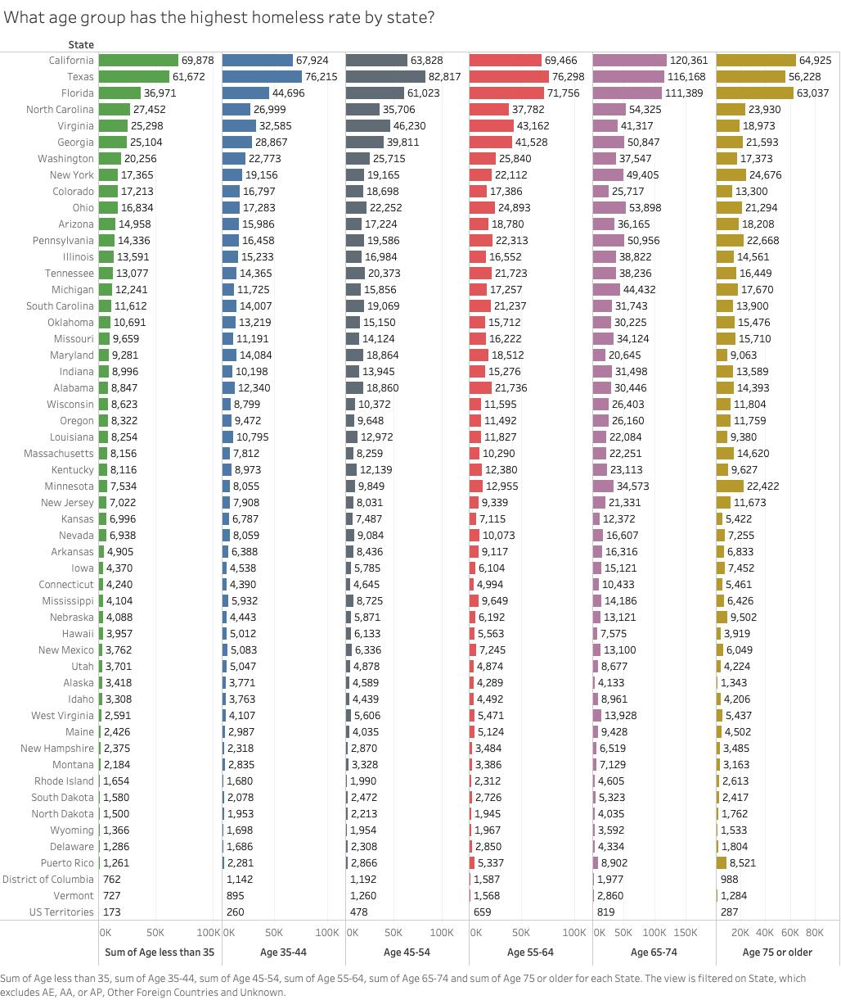

State: Nominal → Dimension for each state in the U.S.
Homelessness Count: Quantitative → Color saturation dependent upon quantity
We began our research looking into the Department of Housing and Urban Development's January Point-in-Time dataset, which began their data collection recently in 2007.
We decided to create an interactive map to visualize the amount of homeless people across the United States, and we wanted to know what the situation currently looks like. Tooltips are provided upon hovering within a state boundary.
Maps are intuitive and show where the people are physically located, and offer an overlook type of insight.
The darkest shade of red represents the state with the highest rate of homelessness and the lightest shade represents the state with the lowest.
After completing the first visualization, we had wondered how the situation
had changed over the years since the data has been collected. We wondered if the situation
had improved or gotten worse, and how states compared to each other, since it seemed as
only California and New York had significant problems. We decided to explore this with a dynamic pie chart.
Overall, it appears that there are less people considered homeless than there were 10 years ago, however,
California and New York have gotten worse over time.

Since we've been looking only at the overall situation, we wondered how the situation looks for
people in different age ranges, while also utilizing state as a dimension. For this we chose multiple,
side-by-side bar charts. Looking at the states with the highest amount of homelessness, we can see that
California has the most homeless people of young and elderly age, while Texas has more in the middle age range.